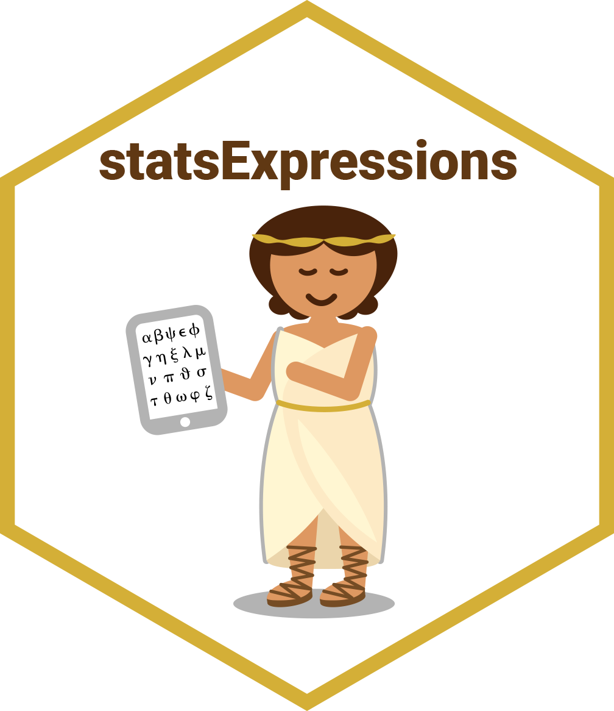

Keep complete subjects in repeated measures data
Source:R/complete-subjects.R
complete_subjects.RdPrepares long/tidy repeated measures data for analysis by keeping only the
subjects observed in every level of x. This is the listwise deletion step
that long_to_wide_converter() applies when paired = TRUE, and thus the
data that two_sample_test(), oneway_anova(), and
pairwise_comparisons() analyze for within-subjects designs.
The following steps are carried out:
Rows with a missing
xorsubject.idare dropped, since they cannot be paired.An error is thrown if any subject has more than one row in a level of
x.Subjects with a missing
yvalue, or without a row, in any level ofxare removed entirely.
Arguments
- data
A data frame (or a tibble) from which variables specified are to be taken. Other data types (e.g., matrix, table, array, etc.) will not be accepted. Additionally, grouped data frames from
{dplyr}should be ungrouped before they are entered asdata.- x
The grouping (or independent) variable from
data. For repeated measures designs, see the note on ordering insubject.id.- y
The response (or outcome or dependent) variable from
data.- subject.id
Relevant in case of a repeated measures or within-subjects design (i.e.,
paired = TRUE), it specifies the subject or repeated measures identifier. Important: If this argument isNULL(which is the default), observations are paired by their row order within each level ofx(i.e., the data is assumed to be sorted in a subject-1, subject-2, ... pattern within every level). If the data is not sorted this way, the paired results will be silently incorrect, so it is safest to always specifysubject.id. For paired designs, each subject must have at most one row per level ofx(an error is thrown otherwise), and rows with a missingsubject.idare dropped because they cannot be paired (seecomplete_subjects()).
Value
A tibble in long format with columns .rowid (the subject
identifier, or an internal row identifier when subject.id is NULL),
x (as a factor with unused levels dropped), and y, sorted by .rowid.
Citation
Patil, I., (2021). statsExpressions: R Package for Tidy Dataframes and Expressions with Statistical Details. Journal of Open Source Software, 6(61), 3236, https://doi.org/10.21105/joss.03236
Examples
# subjects with a missing rating in any condition are removed
complete_subjects(bugs_long, condition, desire, subject.id = subject)
#> # A tibble: 352 × 3
#> .rowid condition desire
#> <int> <fct> <dbl>
#> 1 1 HDHF 10
#> 2 1 HDLF 9
#> 3 1 LDHF 6
#> 4 1 LDLF 6
#> 5 3 HDHF 10
#> 6 3 HDLF 10
#> 7 3 LDHF 10
#> 8 3 LDLF 5
#> 9 4 HDHF 9
#> 10 4 HDLF 6
#> # ℹ 342 more rows